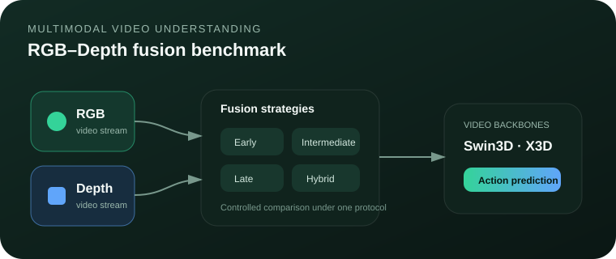
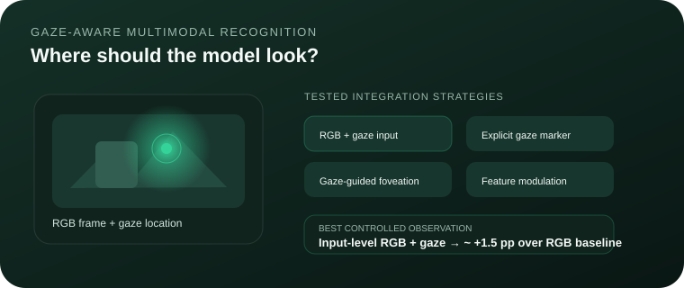
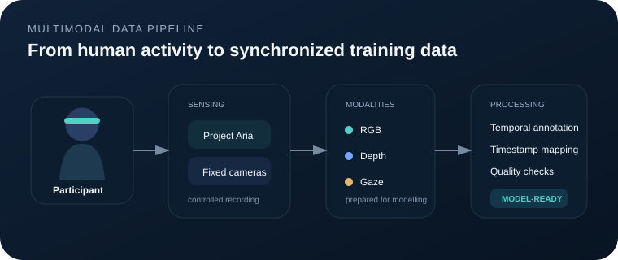

Doctoral researcher in Robotics and Intelligent Machines working on video understanding,
fine-grained action recognition, multimodal learning, and human-robot interaction.
I build Python/PyTorch research pipelines for RGB, Depth, gaze, and egocentric visual data.
GitHub ↗Bolzano, ItalyOpen to research & R&D roles
Core modalitiesRGB · Depth · Gaze
Research stackPython · PyTorch · OpenCV
Video modelsSwin3D · X3D
Human sensingProject Aria · EEG
HRC
RGBDepthGazeEEG
24+human participants in multimodal recording
5published / accepted research papers
4fusion families benchmarked
2research domains: vision + brain–robot control
Selected research
Projects built around real multimodal data.
Focused on evidence, controlled comparisons, reproducibility, and clear failure analysis.
01
Action RecognitionRGB–Depth

Procedural Video Understanding
Built a unified benchmark for early, intermediate, late, and hybrid RGB–Depth fusion
using Video Swin Transformer/Swin3D and X3D under a consistent evaluation protocol.
Fine-grained assembly/disassembly recognition
Accuracy–complexity analysis with latency, GFLOPs and parameters
Accepted IC2IE 2026 paper
02
GazeEgocentric Vision

Gaze-Aware Multimodal Recognition
Studied whether gaze can improve action recognition through direct RGB+gaze integration,
gaze markers, foveation, and feature-level modulation.
Approximately +1.5 percentage points over the controlled RGB baseline
Controlled ablations including negative and overfitting variants
Designed for human-aware perception in HRC
03
Project AriaData Pipeline

Multimodal Human-Participant Dataset
Designed and conducted a participant-based assembly/disassembly recording study using
Meta Project Aria and two fixed-view cameras.
Participant instructions, ethics/consent and data-quality monitoring
RGB, Depth and gaze-oriented data preparation
Reusable temporal annotation and timestamp-mapping workflow
04
EEGShared Control
Brain-Controlled Mobile Robot
Developed EEG-driven shared-control methods in MATLAB/Simulink, combining SVM intention
classification with fuzzy and self-learning neuro-fuzzy safety control.
Human-in-the-loop EEG acquisition and classification
Intention tracking and obstacle-avoidance control
Simulation-based evaluation
Experience
Research across vision, multimodal sensing and HRI.
University of Genoa / Free University of Bozen–Bolzano
Doctoral Researcher — Robotics and Intelligent Machines
Develops multimodal action-recognition methods and reproducible video-learning pipelines for
procedural assembly/disassembly using RGB, Depth and gaze.
PyTorchSwin3DX3DProject AriaHRC
Beijing Institute of Technology, China
Graduate Researcher — Brain–Robot Interfaces
Worked on EEG intention classification and shared control for a simulated brain-controlled mobile robot,
integrating machine-learning commands with autonomous safety logic.
EEGSVMMATLAB/SimulinkFuzzy Control
Chenab College of Engineering and Technology, Pakistan
Lecturer
Taught engineering courses and supervised laboratory and project-based work, supporting students in
implementation, experimentation, and technical problem solving.
Publications
Selected research output.
2026
A Comparative Evaluation of RGB–Depth Fusion for Egocentric Assembly Action Recognition
Z. Razzaq et al. · Accepted for presentation at IC2IE 2026.
2024
Intelligent Control System for Brain-Controlled Mobile Robot Using Self-Learning Neuro-Fuzzy Approach
Z. Razzaq, N. Brahimi, H. Z. Ur Rehman, Z. H. Khan · Sensors, 24(18), 5875.
2020
Fuzzy-Based Shared Control for Brain-Controlled Mobile Robot
Z. Razzaq and L. Bi · 39th Chinese Control Conference, pp. 3759–3764.
2025
Explainable Spatio-Temporal Inference Network for Car-Sharing Demand Prediction
N. Brahimi, H. Zhang, Z. Razzaq · ISPRS International Journal of Geo-Information, 14(4), 163.
2025
Quantum-Inspired Spatio-Temporal Inference Network for Sustainable Car-Sharing Demand Prediction
N. Brahimi, H. Zhang, Z. Razzaq · Sustainability, 17(11), 4987.
Education
Robotics, mechatronics and control.
PhD Programme
Robotics and Intelligent Machines
University of Genoa, Italy
Research hosted at the Free University of Bozen–Bolzano. Focus: multimodal action recognition, egocentric video understanding and HRC.
MSc
Mechatronics and Control Engineering
University of Engineering and Technology Lahore, Pakistan
Advanced robotics, AI, industrial automation, sensing, signal processing and control systems.
BSc
Mechatronics and Control Engineering
University of Engineering and Technology Lahore, Pakistan
Machine vision, automation, robotics design, DSP, embedded systems and mechatronic system design.